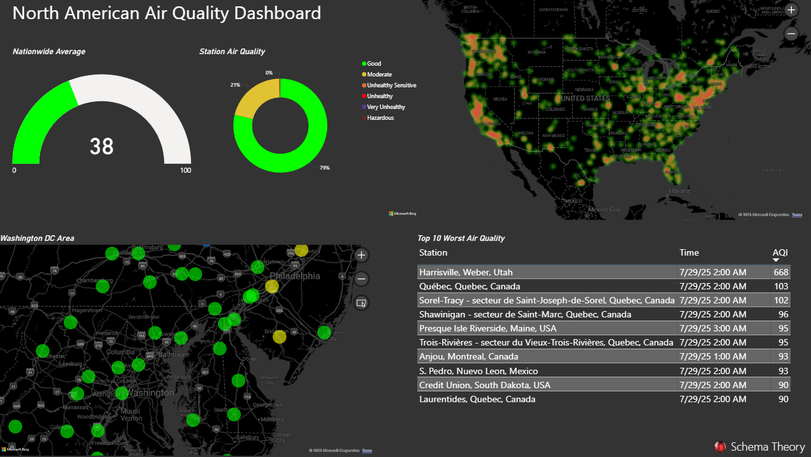

Real-Time Air Quality (North America)
Description
Monitor current air quality levels across major North American cities using geospatial visuals powered by real-time AQI data from public sources. The dashboard aggregates and highlights pollution hotspots, clean-air zones, and trends across hundreds of monitoring stations.
Visual Example

Key Metrics
- Average AQI (Air Quality Index)
- Top 10 Worst Stations by AQI
- Station Count by AQI Bucket (Good, Moderate, Unhealthy, etc.)
- Geospatial Heatmap of Average AQI across North America
Usage Notes
This dashboard uses a publicly accessible air quality API to retrieve real-time readings from North American monitoring stations. The data is refreshed on load and does not persist across sessions. You may optionally replace the included token with your own by editing the query parameter in Power Query.